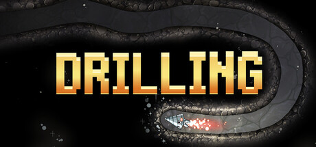

2D MINING ADVENTURETEAM PROJECT · STEAM
Drilling
깊은 땅속에서, 다시 달까지.
땅을 파고 광석을 모아 드릴과 제트팩을 강화하는 2D 마이닝 어드벤처. 부담 없이 짧게 즐길 수 있는 힐링 게임을 6인 팀으로 개발해 Steam에 출시했습니다.
- 기간
- 2025.06 ~ 출시 후 업데이트 중
- 역할
- PD · 기획 · 클라이언트 개발 · UI / 연출
- 팀
- 6인 · 기획 / 개발 / 아트 / 마케팅
반복 플레이도, 팀 개발도 매끄럽게
채굴이 단조로워지지 않도록 짧은 목표와 보상이 필요했습니다. 개발에서는 전체 타일맵 탐색 비용, 출시 후 세이브 호환, 여러 팀원이 같은 플레이어 코드를 수정하는 문제가 있었습니다.
방향을 정하고, 플레이로 연결하기
일정·회의·업무 분배와 Steam 출시 준비를 맡았습니다. 게임 기능과 에디터 툴을 개발하고, 카드형 상점·미니맵·엔딩 시퀀스 등 플레이어가 만나는 화면을 구현했습니다.
기술적으로 어떻게 해결했나요?
탐색 범위와 메모리 사용을 줄이는 구조
원석 셀만 별도 자료구조에 캐싱해 탐색 대상을 전체 지형에서 원석으로 좁혔습니다. 플레이어 주변 청크만 유지하고 범위를 벗어난 청크는 반환하며, Sprite Atlas로 함께 쓰는 이미지를 묶었습니다.
이 개선은 당시 전후 프로파일러 수치를 남기지 않아 정량적인 성능 향상률을 제시하지 않습니다.
기존 플레이어의 세이브를 이어 주기
저장 데이터에 버전 필드를 추가하고 버전에 따라 처리 흐름을 분기했습니다. 버전 필드가 없는 기존 파일은 레거시 데이터로 보정해 읽도록 했습니다. 배포 이후의 데이터 호환을 설계에 포함해야 한다는 점을 배웠습니다.
6명이 나눠 개발할 수 있는 플레이어
이동·드릴·제트팩·조준·탐지·조명을 6개 모듈로 나누고 공통 초기화 흐름을 두었습니다. ScriptableObject 이벤트 채널로 UI·오디오·게임 상태의 직접 참조를 줄였습니다. 대신 모듈 간 상태 공유와 이벤트 흐름 추적의 복잡성이 늘어나는 절충이 있었습니다.
반복 작업을 줄이고, 피드백을 더하기
Google Sheet에서 ScriptableObject를 생성·갱신하는 데이터 파이프라인을 구성했습니다. 상점은 마우스에 반응하는 3D 카드와 해금 효과를 연결하고, Timeline·Cinemachine으로 엔딩의 카메라·사운드·크레딧 흐름을 구성했습니다.